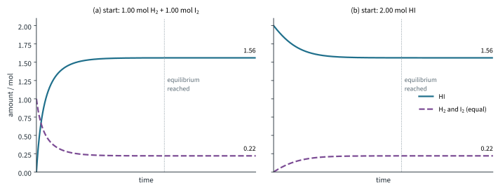
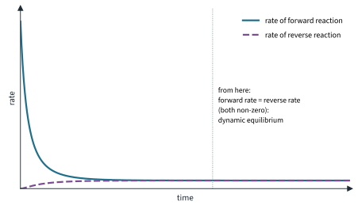

Chemical Equilibria 1
Topic 9 · Chemical Equilibria Part 1
On this page
So far we have mostly written reactions with a single arrow, as if every reactant turns into product. Many reactions do not. They stop part of the way, with reactants and products both present, and nothing more seems to happen however long you wait. This Part explains what is really going on (a lot, it turns out), and how to put a number on how far a reaction goes. Part 2 looks at how we can push the position of an equilibrium one way or the other, and why the Haber process is run the way it is.
Key terms
You will use these terms throughout the topic.
| Term | Meaning |
|---|---|
| Reversible reaction | A reaction that can go in both directions: reactants form products, and products react to re-form the reactants. Shown by ⇌. |
| Closed system | Nothing (matter) can enter or leave, for example a sealed flask. Energy can still be exchanged with the surroundings. |
| Dynamic equilibrium | The state of a reversible reaction in a closed system when the rate of the forward reaction equals the rate of the reverse reaction, so the concentrations stay constant. |
| Position of equilibrium | The relative amounts of reactants and products present at equilibrium. "Lies to the right" means mostly products. |
| Equilibrium constant, Kc | The equilibrium concentrations of the products divided by those of the reactants, each raised to the power of its coefficient in the equation. |
| Equilibrium constant, Kp | The same, written with the equilibrium partial pressures of gases instead of concentrations. |
| Partial pressure, pA | The pressure gas A would exert if it alone occupied the whole container: pA = xA × ptotal (Dalton's Law, Topic 3 Part 2). |
| Mole fraction, xA | Amount of A divided by the total amount of gas: xA = nA / ntotal. |
| Homogeneous / heterogeneous equilibrium | All species in the same phase / species in different phases (for example a solid and a gas). |
Reversible reactions
Heat blue hydrated copper(II) sulfate and it turns white as the water is driven off. Add water to the white solid and it turns blue again, and gets hot. The same reaction runs in either direction depending on the conditions:
CuSO4·5H2O(s) ⇌ CuSO4(s) + 5H2O(l)
A more useful example for this topic is hydrogen and iodine. In a sealed flask at 731 K, hydrogen and iodine vapour react to form hydrogen iodide (a slightly exothermic reaction: about −11 kJ mol−1 from Data Booklet bond energies), but hydrogen iodide also decomposes back into hydrogen and iodine (you saw this in the hot-needle test of Topic 5 Part 3):
H2(g) + I2(g) ⇌ 2HI(g)
The reaction from left to right is the forward reaction; from right to left is the reverse reaction. The sign ⇌ tells you both happen. (Use → only for a reaction that goes, for all practical purposes, to completion.)
Dynamic equilibrium
Put 1.00 mol of H2 and 1.00 mol of I2 into a sealed 10.0 dm3 flask at 731 K, and follow the amounts (Fig 1a).
- At the start there is no HI, so only the forward reaction can happen. Its rate is high because [H2] and [I2] are high.
- As H2 and I2 are used up, the forward rate falls. As HI builds up, the reverse reaction starts and its rate rises.
- Eventually the two rates become equal. From then on, HI is made just as fast as it is broken down, so the amounts stop changing: 0.22 mol H2, 0.22 mol I2 and 1.56 mol HI.

Start instead with 2.00 mol of HI (the same atoms) and the reverse reaction runs first. The system ends up at exactly the same mixture (Fig 1b). Fig 2 shows the rates for the first experiment.

This is a dynamic equilibrium. "Equilibrium" because nothing seems to change; "dynamic" because both reactions are still going on, at the same rate.
How do we know it is dynamic?
Let the H2, I2, HI mixture reach equilibrium, then add a little iodine made with a radioactive isotope, I2*. The amounts of H2, I2 and HI stay exactly the same, yet the radioactivity soon turns up in the hydrogen iodide as HI*. The only way it can get there is by HI being formed and broken down all the time.1
The equilibrium constant in terms of concentrations
Experiments at 731 K with many different starting mixtures of H2, I2 and HI all end with different equilibrium concentrations. But one combination of them always comes out the same:
[HI]2 / ([H2][I2]) = 50 (approximately), whatever you start with
This constant is the equilibrium constant, Kc. For a general reaction
aA + bB ⇌ cC + dD
Kc = [C]c[D]d / ([A]a[B]b)
- Products on top, reactants underneath.
- Each concentration is raised to the power of its coefficient in the balanced equation. (Unlike a rate equation, you do not need experiments to find these powers.)
- Square brackets mean concentration in mol dm−3 at equilibrium.
- Kc is constant for a given reaction at a given temperature. Only a change of temperature changes it (Part 2).
Units of Kc
Work the units out from the expression every time: put mol dm−3 in for every concentration and cancel.
| Equilibrium | Kc | Units |
|---|---|---|
| H2(g) + I2(g) ⇌ 2HI(g) | [HI]2 / ([H2][I2]) | none (they cancel) |
| 2SO2(g) + O2(g) ⇌ 2SO3(g) | [SO3]2 / ([SO2]2[O2]) | mol−1 dm3 |
| N2(g) + 3H2(g) ⇌ 2NH3(g) | [NH3]2 / ([N2][H2]3) | mol−2 dm6 |
| N2O4(g) ⇌ 2NO2(g) | [NO2]2 / [N2O4] | mol dm−3 |
| Fe3+(aq) + SCN−(aq) ⇌ [Fe(SCN)]2+(aq) | [Fe(SCN)2+] / ([Fe3+][SCN−]) | mol−1 dm3 |
For example, for the SO2 reaction: (mol dm−3)2 / ((mol dm−3)2 × mol dm−3) = 1 / mol dm−3 = mol−1 dm3.
Solids, pure liquids and water
The concentration of a pure solid or a pure liquid is fixed by its density; it does not change as the reaction goes on. So pure solids and pure liquids are left out of K (their constant values are absorbed into K). For the thermal decomposition of calcium carbonate in a closed container:
CaCO3(s) ⇌ CaO(s) + CO2(g) Kc = [CO2]
This is a heterogeneous equilibrium: the species are in different phases. Water needs a little care.
- When water is the solvent of a dilute aqueous solution, its concentration hardly changes, so it is left out. For the cobalt equilibrium in Part 2, [Co(H2O)6]2+(aq) + 4Cl−(aq) ⇌ [CoCl4]2−(aq) + 6H2O(l), Kc = [CoCl42−] / ([Co(H2O)62+][Cl−]4).
- When water is a product in a mixture of liquids, its concentration does change, so it stays in. The esterification below is the standard example.
What the size of K tells you
- K ≫ 1 (say 1010): the equilibrium lies far to the right; the reaction goes practically to completion.
- K ≪ 1 (say 10−10): the equilibrium lies far to the left; hardly any product forms.
- K about 1: reactants and products both present in comparable amounts.
K tells you how far a reaction goes, not how fast. A reaction with a huge K can still be too slow to notice (Topic 7 Part 3: diamond turning into graphite).
Changing the equation changes K
K belongs to the equation as written. At 731 K:
H2(g) + I2(g) ⇌ 2HI(g) Kc = 50.3
2HI(g) ⇌ H2(g) + I2(g) Kc = 1 / 50.3 = 0.0199
HI(g) ⇌ ½H2(g) + ½I2(g) Kc = √0.0199 = 0.141
Reversing the equation inverts K; doubling the coefficients squares K; halving them takes the square root.
The equilibrium constant in terms of partial pressures
For gases it is often easier to measure pressures than concentrations. In a mixture of gases, each gas contributes its partial pressure, and the partial pressures add up to the total (Dalton's Law, Topic 3 Part 2):
pA = xA × ptotal where xA = nA / ntotal
Kp is written exactly like Kc, but with partial pressures at equilibrium:
N2(g) + 3H2(g) ⇌ 2NH3(g) Kp = pNH₃2 / (pN₂ × pH₂3)
- Only gases appear in Kp. For CaCO3(s) ⇌ CaO(s) + CO2(g), Kp = pCO₂: the pressure of CO2 over hot calcium carbonate is fixed at a given temperature.
- A reaction in solution has no Kp.
- Units come from the expression, as for Kc. With pressures in kPa, Kp for the Haber reaction is in kPa−2; for N2O4(g) ⇌ 2NO2(g) it is in kPa.2
Equilibrium calculations
Almost every equilibrium calculation follows the same plan. The table of amounts is often called an ICE table: Initial, Change, Equilibrium.
Work in amounts (mol) in the table, never in concentrations of different volumes, and only convert at step 3. The syllabus promises that no calculation needs a quadratic equation, so if you find yourself with one, look for a square root you can take, or a quantity you were given.
Worked example 1: Kc from equilibrium amounts
1.00 mol of hydrogen and 1.00 mol of iodine are sealed in a 10.0 dm3 flask at 731 K. At equilibrium the flask contains 1.56 mol of hydrogen iodide. Calculate Kc at 731 K (illustrative data).
(To find Kc, you first need the equilibrium amounts of all three gases. 1.56 mol HI formed, so by the equation 1.56 / 2 = 0.78 mol of each reactant was used.)
| H2(g) | + I2(g) | ⇌ 2HI(g) | |
|---|---|---|---|
| Initial / mol | 1.00 | 1.00 | 0 |
| Change / mol | −0.78 | −0.78 | +1.56 |
| Equilibrium / mol | 0.22 | 0.22 | 1.56 |
| Equilibrium / mol dm−3 | 0.022 | 0.022 | 0.156 |
Kc = [HI]2 / ([H2][I2]) = (0.156)2 / ((0.022)(0.022)) = 50.3
Kc = 50.3, no units. Notice that the volume cancels here (2 moles of gas on each side), so you could have used the amounts directly. That is true only when the powers on top and bottom add up to the same number. The literature value at this temperature is about 50.
Worked example 2: a liquid-phase equilibrium
1.00 mol of ethanoic acid and 1.00 mol of ethanol are heated with a few drops of concentrated sulfuric acid (a catalyst) until equilibrium is reached. The mixture then contains 0.667 mol of ethyl ethanoate. Calculate Kc.
| CH3COOH(l) | + C2H5OH(l) | ⇌ CH3COOC2H5(l) | + H2O(l) | |
|---|---|---|---|---|
| Initial / mol | 1.00 | 1.00 | 0 | 0 |
| Change / mol | −0.667 | −0.667 | +0.667 | +0.667 |
| Equilibrium / mol | 0.333 | 0.333 | 0.667 | 0.667 |
Here water is a product in a mixture of liquids, not the solvent, so it stays in the expression. With a total volume V dm3:
Kc = [CH3COOC2H5][H2O] / ([CH3COOH][C2H5OH]) = (0.667/V)(0.667/V) / ((0.333/V)(0.333/V))
= (0.667 × 0.667) / (0.333 × 0.333) = 4.01
Kc = 4.01 (about 4, the usual literature value), no units. You never needed V.
Worked example 3: Kc with units, from initial amounts
0.400 mol of sulfur dioxide and 0.200 mol of oxygen are placed in a 2.00 dm3 vessel and allowed to reach equilibrium at a fixed temperature. The equilibrium mixture contains 0.320 mol of sulfur trioxide. Calculate Kc and give its units (illustrative data).
(To fill in the Change row, use the equation: making 0.320 mol of SO3 uses 0.320 mol of SO2 and 0.160 mol of O2.)
| 2SO2(g) | + O2(g) | ⇌ 2SO3(g) | |
|---|---|---|---|
| Initial / mol | 0.400 | 0.200 | 0 |
| Change / mol | −0.320 | −0.160 | +0.320 |
| Equilibrium / mol | 0.080 | 0.040 | 0.320 |
| Equilibrium / mol dm−3 | 0.0400 | 0.0200 | 0.160 |
Kc = [SO3]2 / ([SO2]2[O2]) = (0.160)2 / ((0.0400)2 × (0.0200)) = 800 mol−1 dm3
This time the volume does not cancel, so you must convert to concentrations first. Using the amounts directly would give 400, which is wrong.
Worked example 4: equilibrium amounts from Kc
0.50 mol of hydrogen and 0.50 mol of iodine are sealed in a 10.0 dm3 flask at 731 K, where Kc = 50.3. Calculate the amounts of each gas at equilibrium.
| H2(g) | + I2(g) | ⇌ 2HI(g) | |
|---|---|---|---|
| Initial / mol | 0.50 | 0.50 | 0 |
| Change / mol | −x | −x | +2x |
| Equilibrium / mol | 0.50 − x | 0.50 − x | 2x |
The volume cancels (as in Worked example 1), so
(2x)2 / (0.50 − x)2 = 50.3
(This looks like a quadratic, but both sides are perfect squares: take the square root of each side.)
2x / (0.50 − x) = √50.3 = 7.092
2x = 7.092(0.50 − x) so 9.092x = 3.546 and x = 0.390
At equilibrium: HI = 2 × 0.390 = 0.780 mol, which is 0.78 mol to 2 s.f.; H2 = I2 = 0.50 − 0.390 = 0.110 mol, which is 0.11 mol each. (Check: 0.7802 / 0.1102 = 50.3.)
Worked example 5: Kp from moles and total pressure
1.00 mol of dinitrogen tetroxide is heated in a sealed container. At equilibrium 0.50 mol of it has dissociated and the total pressure is 100 kPa. Calculate Kp (illustrative data, at about 60 °C).
| N2O4(g) | ⇌ 2NO2(g) | Total | |
|---|---|---|---|
| Initial / mol | 1.00 | 0 | 1.00 |
| Change / mol | −0.50 | +1.00 | |
| Equilibrium / mol | 0.50 | 1.00 | 1.50 |
| Mole fraction | 0.50 / 1.50 = 1/3 | 1.00 / 1.50 = 2/3 | 1 |
| Partial pressure / kPa | 33.33 | 66.67 | 100 |
Kp = pNO₂2 / pN₂O₄ = (66.67)2 / 33.33 = 133 kPa
Kp = 133 kPa, or 1.3 × 102 kPa to the 2 s.f. of the data. Keep the unrounded partial pressures in your calculator: (66.7)2 / 33.3 gives 134. Notice that the total amount of gas changes here (1.00 → 1.50 mol), so you must use the equilibrium total, 1.50 mol, for the mole fractions.
Worked example 6: equilibrium partial pressures from Kp
Phosphorus pentachloride dissociates when heated: PCl5(g) ⇌ PCl3(g) + Cl2(g). At 523 K, Kp = 180 kPa (literature value, about 1.8 atm). A sample of PCl5 is heated to 523 K and allowed to reach equilibrium at a total pressure of 200 kPa. Calculate the fraction of PCl5 that dissociates, and the partial pressure of each gas.
(You are not told how much PCl5 there was, and you do not need to know: take 1 mol, and let a fraction α of it dissociate.)
| PCl5(g) | ⇌ PCl3(g) | + Cl2(g) | Total | |
|---|---|---|---|---|
| Initial / mol | 1 | 0 | 0 | 1 |
| Equilibrium / mol | 1 − α | α | α | 1 + α |
| Partial pressure | (1 − α)p / (1 + α) | αp / (1 + α) | αp / (1 + α) | p |
Kp = pPCl₃ × pCl₂ / pPCl₅ = [αp / (1 + α)]2 / [(1 − α)p / (1 + α)] = α2p / ((1 − α)(1 + α)) = α2p / (1 − α2)
(Again no quadratic: the expression is linear in α2.) Rearranging, α2(p + Kp) = Kp:
α2 = 180 / (200 + 180) = 0.4737 so α = 0.6882
So 68.8 % of the PCl5 dissociates, and
pPCl₃ = pCl₂ = (0.6882 × 200) / 1.6882 = 81.5 kPa pPCl₅ = (0.3118 × 200) / 1.6882 = 36.9 kPa
(Keep α to 4 s.f. here: with 0.688 the last pressure comes out as 37.0.) Check: 81.52 / 36.9 = 180 kPa. (PCl5 is a solid at room temperature; it sublimes at about 160 °C, so at 523 K all three are gases.)
Summary
Additional information
- Any radioactive isotope of iodine would do. Labelling with deuterium (some D2 in place of H2) works the same way: the label is found by mass spectrometry (Topic 1), and DI turns up although the amounts stay constant. ↩
- Beyond the syllabus: in thermodynamics, K is written with each pressure divided by the standard pressure (1 bar = 100 kPa), which makes it a pure number. You will see this in the Enrichment box on ΔG⦵ in Part 2. ↩